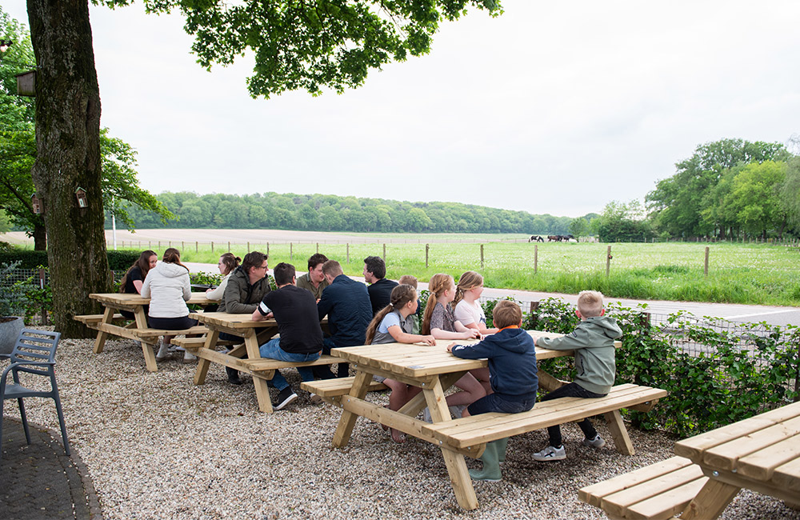
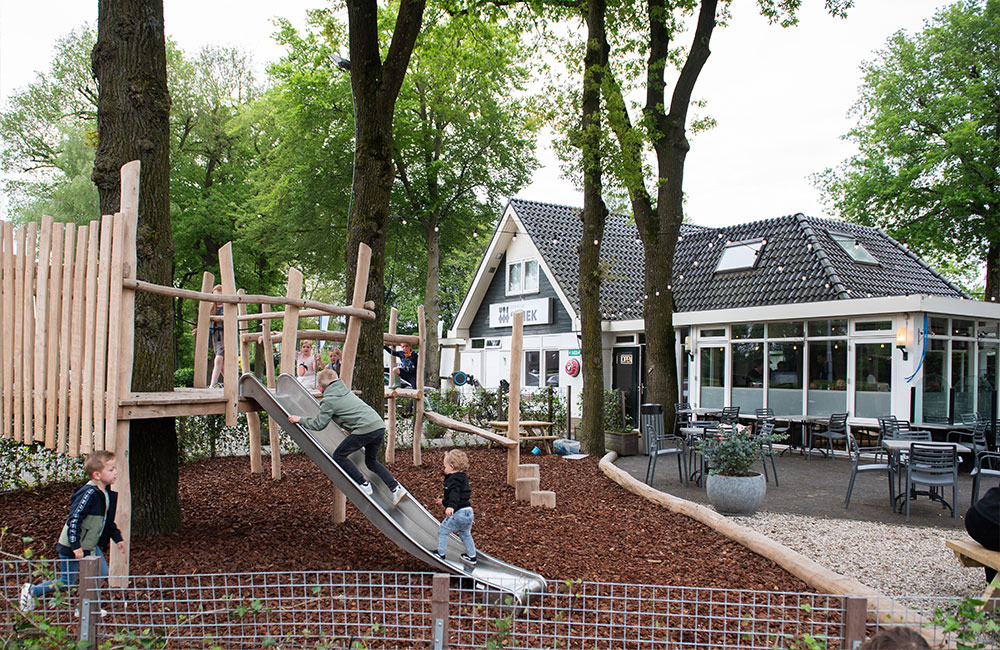
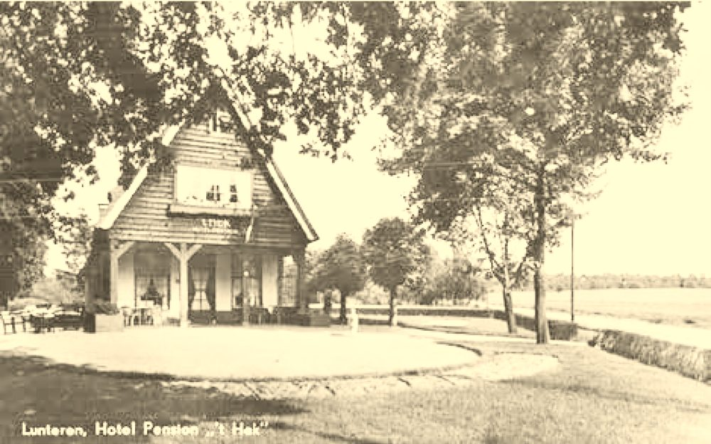
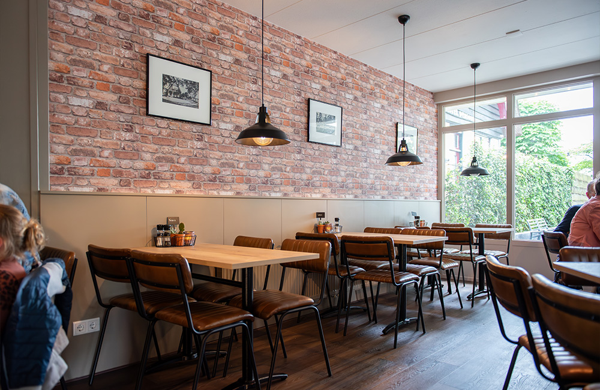
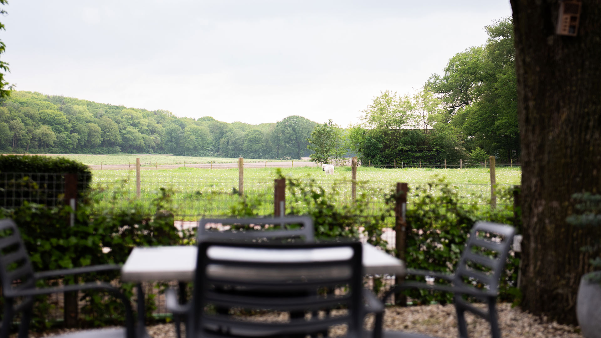

Eethuis & cafetaria in Lunteren
Eethuis 't Hek
Welkom bij het gezelligste eethuis van de omgeving. Aan tafel, op het terras met uitzicht over de wei, of lekker mee naar huis.
Woensdag en donderdag 16:30 – 20:00, vrijdag en zaterdag 11:00 – 20:00
Een eethuis op een prachtige locatie
Eethuis 't Hek is een gastvrij, laagdrempelig en gezellig eethuis, omringd door de natuur. Je kunt je eten ophalen in onze cafetaria, maar we hebben ook een zitgedeelte en een terras waar je heerlijk kunt genieten. In de omgeving lopen verschillende wandel- en fietsroutes langs lokale bezienswaardigheden, om jouw uitje compleet te maken.
Of je nu met familie komt eten, een zakelijke lunch hebt of gewoon een ontspannen diner plant met vrienden: bij ons ben je van harte welkom. En je hond ook.
- Oplaadpunt voor je e-bike
- Gratis wifi voor bezoekers
- Kindvriendelijk, met speeltuin
- Ruime parkeerplaats voor auto en fiets
- Honden zijn welkom
- Glutenvrij, vegetarisch en vegan

Alleen in de wintermaanden
Het rad van patat
Elke woensdag en donderdag staat bij ons het rad. Heb je lekker gegeten? Dan mag je bij het afrekenen één keer draaien en maak je kans op het verscheuren van de rekening, of op een van de andere prijzen.
Geldt alleen voor gasten die bij ons gezellig eten, niet voor afhalen.

Sinds 1490 een plek aan het hek
Lang, lang geleden, in het jaar 1490, praatten de mensen al over 'de zwarte boerderij' op de plek waar nu 't Hek staat. De naam komt van een hek dat honderden jaren geleden werd neergezet om wilde dieren aan de ene kant en de boeren aan de andere kant te houden. De mensen die in de zwarte boerderij woonden, zorgden voor het hek.
De 'oudere' generatie kent 't Hek nog als hotel/pension en speeltuin. Tegenwoordig is Eethuis 't Hek een fijne plek om te stoppen voor een kop koffie of een lekker hapje eten, op het kruispunt van de Meulunterseweg en de Hessenweg.
Van harte welkom!

Openingstijden
Je kunt bij ons eten bestellen en ophalen, of kiezen voor bediening aan tafel. We verwelkomen je graag binnen onze openingstijden.
| Maandag | Gesloten |
|---|---|
| Dinsdag | Gesloten |
| Woensdag | 16:30 – 20:00 |
| Donderdag | 16:30 – 20:00 |
| Vrijdag | 11:00 – 20:00 |
| Zaterdag | 11:00 – 20:00 |
| Zondag | Gesloten |
Eethuis 't Hek
Meulunterseweg 32
6741 HN Lunteren

Veelgestelde vragen
Is er bij Eethuis 't Hek iets te doen voor kinderen?
Ja, er is bij ons eethuis een speeltuintje waar kinderen heerlijk buiten kunnen spelen.
Kan ik mijn elektrische fiets opladen bij het eethuis?
Ja, we hebben oplaadpunten voor elektrische fietsen naast het eethuis.
Kan ik mijn elektrische auto opladen bij het eethuis?
Nee, we hebben nog geen oplaadpunten voor elektrische auto's naast het eethuis.
Zijn er gerechten waarbij rekening wordt gehouden met dieetwensen?
Ja, we hebben glutenvrije, vegetarische en veganistische gerechten. Kijk bij de menukaart onder Glutenvrij en Vegetarisch.
Kan ik een ruimte huren voor gelegenheden?
Ja, naast ons eethuis hebben we ruimtes die we verhuren voor gelegenheden, zoals bruiloften, verjaardagen, vergaderingen en jubilea. Kijk op zaalthek.nl voor meer informatie.
Stel je vraag
Staat je vraag er niet bij, of wil je meer weten over Eethuis 't Hek? Neem gerust contact op.
- 0318 48 42 44
- info@eethuisthek.nl
- Meulunterseweg 32, 6741 HN Lunteren